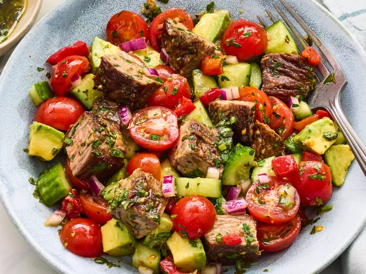

Salade de steak haché au chimichurri
Pages d'accueil

Description
Cette salade de steak haché au chimichurri est fraîche, savoureuse et pleine de saveurs grâce à son steak juteux saisi, ses légumes croquants et son chimichurri maison éclatant. Parfaite pour le déjeuner ou le dîner, cette salade copieuse et rafraîchissante se prépare en 30 minutes.
Ingrédient
- 1 livre de bavette, parée
- 2 cuillères à café de sel casher, divisées
- 3/4 de cuillère à café de poivre noir fraîchement moulu
- 2 cuillères à soupe d'huile neutre, comme de l'huile végétale
- 1/2 tasse d'huile d'olive extra vierge
- 1/4 tasse de persil plat frais finement haché
- 1/4 tasse de coriandre finement hachée
- 3 cuillères à soupe de jus de citron frais
- 2 cuillères à soupe de vinaigre de vin rouge
- 2 gousses d'ail râpées
- 1 cuillère à café de miel
- 1/2 cuillère à café d'origan séché
- 1/4 de cuillère à café de poivre rouge concassé
- 2 tasses de tomates cerises, coupées en deux
- 1 tasse de concombres persans hachés
- 1/2 tasse de poivrons rouges rôtis , égouttés et hachés
- 1/4 tasse d'oignon rouge finement haché
- 1/2 avocat moyen , coupé en dés